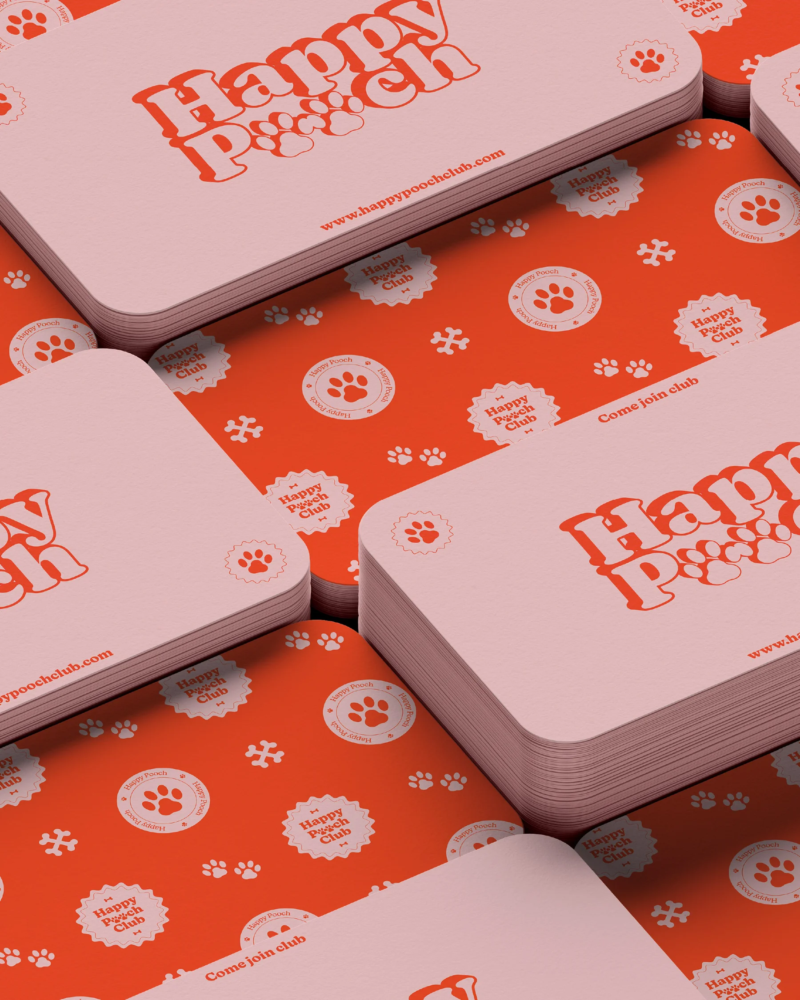
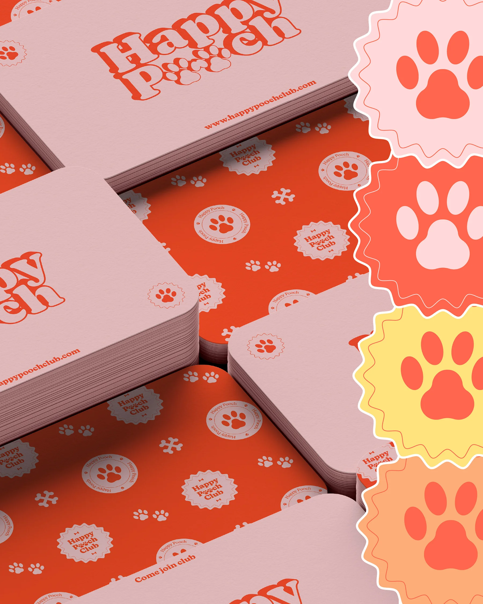
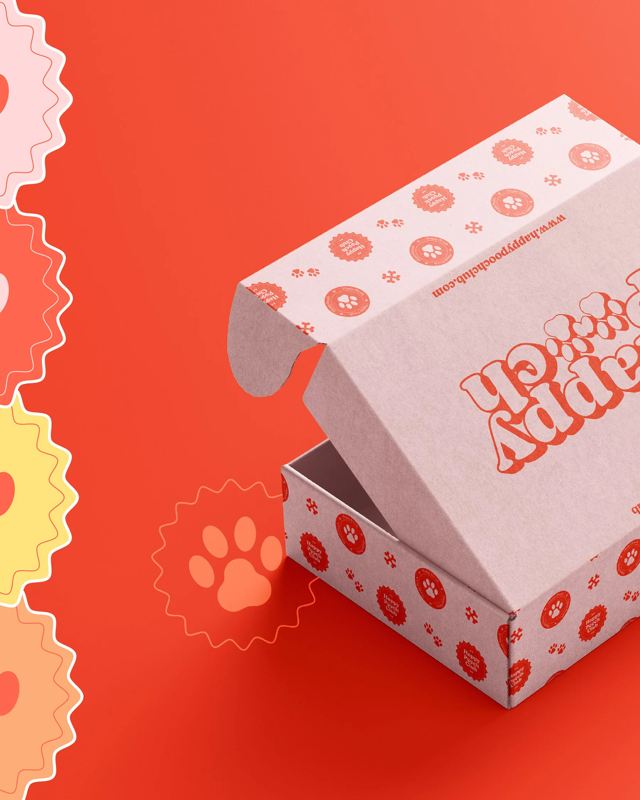
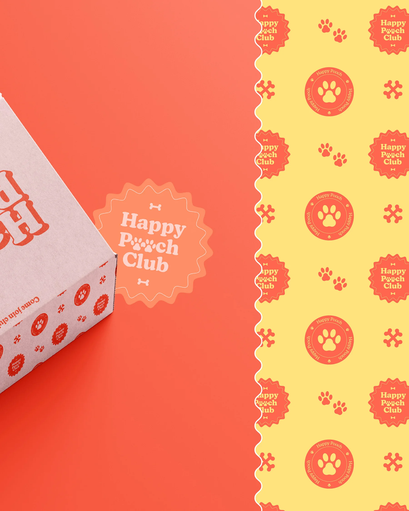
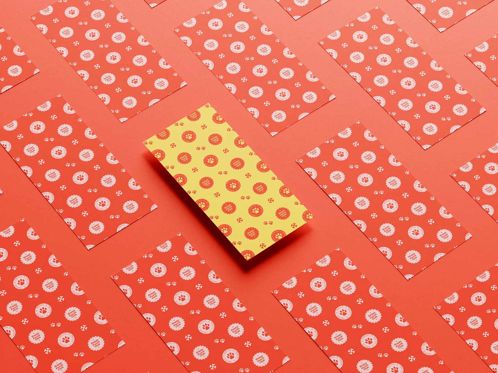
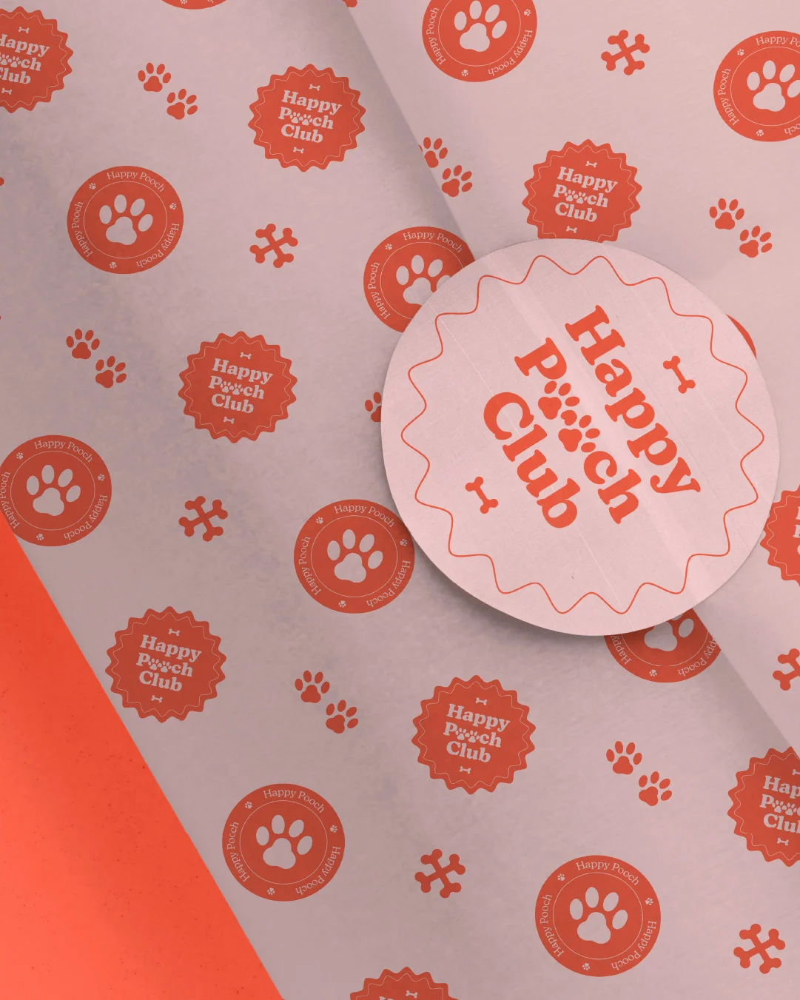
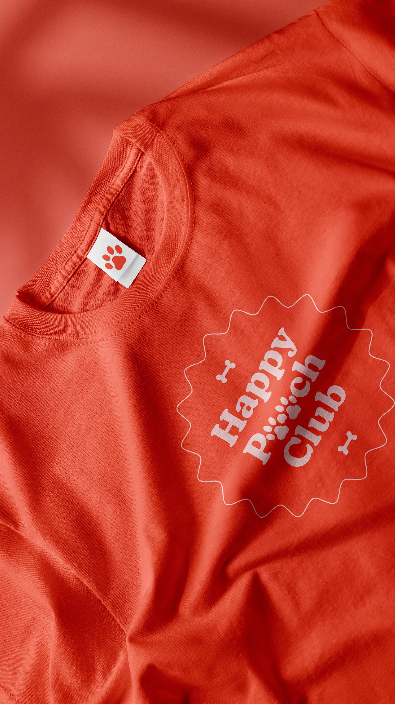
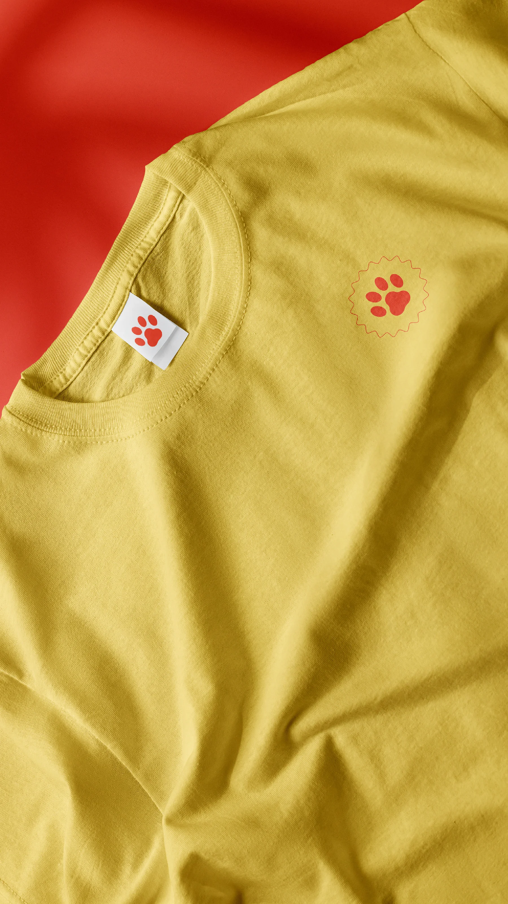

Happy Pooch
A dog club identity in red and blush — a bubbly logotype, paw-print patterning and a print system for cards, stickers and signage.








A dog club identity in red and blush — a bubbly logotype, paw-print patterning and a print system for cards, stickers and signage.







